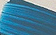
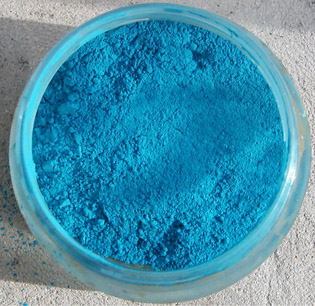
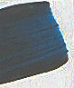
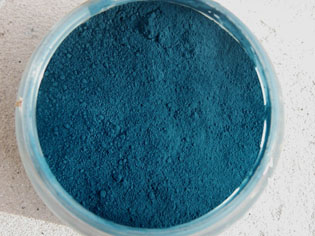
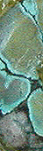

Les
bleus chauds
English version


Le céruléum - orthographe contemporaine habituelle - ou
cæruleum - à l'ancienne, du latin cælum, ciel - ou encore le "bleu céruléen",
"céleste" est un
stannate de cobalt (oxyde
d'étain SnO3 + cobalt + H2O
+ ... - noter que l'oxyde d'étain donne un pigment blanc,
PW15) ou parfois un chromite de cobalt (PB36)
dans l'offre de certains fabricants (voir photo ci-contre).
Contenant du cobalt, il est de toute façon extrêmement coûteux.
Permanent, couvrant, plutôt lumineux mais subtil, rompu, un peu grisâtre, il constitue
bizarrement un "standard" des
bleus chauds - recommandé par certains enseignants et ouvrages d'apprentissage
comme substitut d'un cyan primaire (voir
ci-dessous) - alors que sa composition et sa couleur
l'apparentent plutôt à un bleu moyen - comme son cousin, le
bleu de cobalt. Il est plus froid que le bleu de
manganèse (voir ci-dessous).
Ses imitations (des phtalocyanines), très
répandues à cause du coût élevé de l'original, sont souvent grossières,
nettement plus chaudes que l'original. De plus, les assez nombreuses versions du céruléum au cobalt déclinent
déjà une gamme de nuances assez variées. Cela pourrait expliquer une certaine
confusion.
Le céruléum
est ici positionné parmi les bleus chauds pour des raisons pratiques, afin de faciliter la
recherche de cette couleur, mais en fait il semble bien, quand même, que sa
clarté ne doit pas nous induire en erreur et qu'il s'inscrit plutôt parmi les bleus moyens,
voire froids!
L'emploi du véritable céruléum en peinture à l'huile pose un problème : le cobalt
qu'il contient est un très puissant siccatif. Certains auteurs proclament
joyeusement et naïvement que le céruléum est fort siccatif, comme s'il
s'agissait d'un avantage... Au contraire, c'est un problème. Introduire un pigment ayant un tel
pouvoir dans une peinture n'est pas innocent : cela induit notamment le risque de
provoquer des "différentiels de siccativation" qui occasionnent
habituellement plissements, craquelures et autres déformations indésirables.
Nous conseillons un emploi très prudent et réfléchi du céruléum véritable en peinture à l'huile pour cette raison sauf s'il est appliqué pur entre deux couches de glacis
isolants (il est alors prudent de respecter des temps de siccativation
raisonnables).
Il existe certainement d'autres procédés, mais celui-ci est sans doute le plus
classique.
Par contre, nous conseillons
le céruléum sans aucune réserve "technique" pour tout autre procédé pictural.
Quel que
soit la technique de peinture, l'utilisation du céruléum en mélange -
notamment comme substitut d'une couleur primaire - est une aberration
financière autant que chromatique. Le céruléum est précieux. Le peintre le
choisit avec attention. Sa couleur est subtile. Il se
prête à des corrections nuancées en glacis ou en lavis ou bien à une coloration
pure à l'échelle locale ou générale beaucoup plus qu'aux mélanges destinés à
l'apprentissage.

Le bleu de manganèse
Encore plus que les couleurs au cobalt, son emploi en peinture à l'huile pose un problème.
Il est un siccatif extrêmement puissant (voir notamment Courtrai brun).
Il est magnifique mais coûte fort cher.
Il donne lieu à des imitations très intéressantes et fort justes à
base de cuivre (voir cliché ci-contre).
Des
pigments violets largement distribués contiennent des phosphates de manganèse
("violets minéraux") dont il y a peut-être lieu de se méfier en
emploi à l'huile.
Le bleu de manganèse et surtout sa remarquable imitation sont d'une chaleur
incroyable. Ils sont "à la pointe du bleu", à l'orée des couleurs
chaudes, inespérés. Du rêve à l'état pigmentaire.
Lire l'article Le bleu Mn-YIn
in section Hi-tech
Lire l'article Les manganèses in
Familles chimiques de pigments.
Lire l'article Manganèse du glossaire.
et sur la composition et le procédé de fabrication,
lire un passage dans
le Courrier des Lecteurs
Le bleu "phtalo"
Il s'agit de dérivés
hydrocarbonés et azotés du cuivre. D'ailleurs, leur intitulé complet est
"phtalocyanines de cuivre", ce qui
indique la présence d'azote. Leur
genèse remonte au début du XXème siècle. Ils donnent lieu à
différentes appellation : bleu cyané, bleu monastral ou
hélios (un intitulé utilisé pour d'autres couleurs, soulignant une certaine
résistance à la lumière).
Ils sont très colorants mais peu couvrants. Ils s'adaptent bien aux
glacis
(huile ou autres procédés) et
à l'aquarelle. Ils présentent le plus souvent de bons niveaux de
permanence.
André Béguin souligne leur remarquable résistance à la chaleur.
Pouvant être déclinés du vert - phtalocyanine de cuivre ajoutée de
chlore
ou de brome, deux éléments
halogènes - au
violet - phtalocyanine de cuivre
+ dioxazine -, ils ont la précision chromatique suffisante pour former de belles
imitations (notamment celles du bleu dit "azural", du bleu
dit "turquoise" et du bleu dit "touareg" ou "Hoggar").
Ils ont d'ailleurs servi à de nombreuses imitations réussies, mais aussi à d'autres
qui le sont nettement moins.
Autres dérivés du
cuivre
Ils ont été typiquement réalisés par altération du vert-de-gris. Les premiers
procédés de transformation de ce type datent du XVème
siècle, voire auparavant. D'autres ont existé et la liste des pigments au cuivre est
longue. Nous n'en évoquerons que quelques uns.
Dans la nature on trouve un sulfate et un carbonate.
Le
bleu d'azur, azurite ou azur d'Allemagne
A ne pas confondre avec la couleur du même nom (azur) mais à base de
cobalt, employée pour les vitraux (voir smalt).
Ne pas confondre non plus avec la lazurite.
Etymologie : voir glossaire.
Le bleu d'azur, à base d'azurite
(carbonate
naturel
de cuivre, cf. article du glossaire),
est encore utilisé. Il provient d'un minerai.
Ce pigment est fort coûteux. Il est d'un bleu plutôt chaud en général, assez
proche du bleu de manganèse, mais sur un seul
filon on peut trouver des teintes proches de l'outremer. Broyé
grossièrement, il conserverait une teinte plus vive tout comme le lapis-lazuli
et la malachite.
La première utilisation en peinture remonterait à l'Égypte du IIIème
millénaire BC.
Pendant l'Antiquité romaine, le premier centre de production semble être
l'Arménie. L'azur est alors nommé lapis armenis ("pierre d'Arménie",
donnant aussi une variété verte, la malachite) et est utilisé en
cosmétique. Puis viennent le tour d'Alexandrie (peut-être aussi du Sinaï) et,
conjointement, de Pouzzoles.
Mais le rayonnement de l'azurite concerne tout le continent eurasien.
En Chine, une utilisation picturale apparaît avant la fin de l'Antiquité
tandis que l'Occident et le Japon attendront le Moyen-âge. Dans toute l'Asie,
l'azur a compté parmi les pigments importants, assez recherchés pour susciter
des liens commerciaux jusqu'à l'Europe (notamment la Hongrie).
Les sources de production ont changé à mesure que les gisements s'épuisaient.
Plus tard, l'Allemagne semble être devenue un considérable centre de
production, d'où l'intitulé "azur d'Allemagne", "bleu
d'Allemagne", voire même
"magne". Noter que le terme d'ocre bleu ou, un peu plus
couramment, de cendre bleue, sont quelquefois employés.
Aujourd'hui, Chypre, l'Arménie toujours, la France, l'Italie et l'Allemagne
encore seraient les principaux lieux d'extraction. Sur ces lieux proprement
dits, on trouve souvent aussi du vert de malachite,
ce qui explique notamment le double sens du terme "pierre d'Arménie".
L'azur d'Allemagne était lié, au Moyen-âge, avec une
"eau de gomme" (gomme arabique)
éventuellement ajoutée de blanc d'oeuf, ou avec
de la caséine ou avec du jaune d'oeuf,
mais pas avec de l'huile (apparue bien plus tard). Le broyage est léger (trop
fin, il serait plus terne, ce qui n'est pas un cas isolé). Nous ignorons le comportement
du véritable azur en peinture à l'huile. La cendre
bleue contient de l'azurite et verdit au contact de l'huile, mais
est-ce à cause de ce composant ? Ce n'est pas à exclure a priori, mais
rien ne permet de l'affirmer sans confirmation.
La cendre bleue et le bleu
d'Égypte
Selon nos sources, la cendre bleue serait un mélange
d'azurite
et de bleu de montagne (un parfait inconnu : on ne connaît a priori que le vert
de montagne, mais il s'agit peut-être d'une variante).
La cendre verte serait
également produite - lors du raffinage de l'argent - sur la même base, un
carbonate de cuivre. La cendre bleue est d'ailleurs nettement réputée virer au
vert au contact de l'huile. Elle est donc utilisé pour les peintures à
l'eau (surtout la gouache et l'aquarelle), mais même ainsi, le verdissement
pourrait apparaître (information non confirmée).
Ce pigment serait surtout produit au Royaume Uni (le procédé de fabrication
est secret). Nous croyons savoir qu'il contient, outre le carbonate de cuivre,
du cuivre oxydé et du carbonate de chaux.
Il est clair et plus ou moins chaud. Il serait plutôt fugace ou du
moins versatile.
Les cendres bleues actuelles sont presque toutes des
imitations.
Le
bleu d'Egypte
Selon diverses sources, la cendre bleue serait plus permanente sous sa forme
calcinée : le bleu d'Égypte. En réalité, ce dernier ne peut être réduit à
une simple cendre bleue
ou une azurite calcinée : son procédé
de fabrication originel, fort ancien (VIème siècle BC selon certains,
au moins 2500 voire 3000 BC selon d'autres) mais
déjà très complexe est mal connu. La région était certes dès le IVème
millénaire en plein chalcolithique mais la connaissance de la technologie du
cuivre ne suffit pas à expliquer à elle seule la capacité de réaliser un
frittage suivi d'un broyage, procédé de fabrication
généralement évoqué. A strictement parler nous
savons seulement que l'on trouve dans ce bleu de la silice, du cuivre
et du
potassium ou du
sodium
(donnant des teintes subtilement
différentes). L'Égypte ancienne est d'ailleurs réputée pour sa précocité dans le
domaine des glaçures et
couvertes.
Cette composition, cuivre mis à part, évoque un peu celle de
l'outremer, donc du lapis-lazuli, ce qui n'est peut-être pas fortuit : certains
auteurs prétendent que le bleu égyptien était une imitation du précieux
gemme, se basant sur une traduction de l'appellation originale égyptienne.
Si l'on s'en tient à celle-ci il, s'agirait
peut-être de
la première imitation par synthèse dans l'histoire de l'humanité. Une
imitation toutefois grossière car chromatiquement beaucoup plus chaude que le
lapis-lazuli, à cause de la présence de
cuivre. Tempérons cependant ce point de vue : la distinction entre
les bleus a longtemps été très approximative.
Un doute subsiste cependant. Le bleu
d'Égypte ressemble surtout à l'azurite qu'il a d'ailleurs
remplacée non sans une raison majeure : le carbonate de cuivre ne pouvait avoir
la tenue d'une substance frittée (donc "dé-carbonée" à la cuisson et enrobée
dans la silice) dont la permanence et la
stabilité sont
légendaires.
Notons au passage que le bleu d'Égypte
n'a pas été seulement fabriqué à partir d'azurite. On cite différents composants
cuivrés. Même le bronze aurait été utilisé (information non confirmée).
Rome a importé ce bleu "égyptien" qui n'a
d'ailleurs pas été produit qu'en Égypte mais dans toute la région. Grèce, Gaule,
Ouzbékistan, Scandinavie, etc., auraient même importé cette couleur avant Rome. Puis, au cours du Moyen-âge, la recette
(ou les recettes) se perdit comme tant d'autres, mais il existe de nos jours des synthèses - très proches quant à
la composition chimique des produits finis - dont la permanence est exceptionnelle.
Le bleu céleste dit bleu de
Brême
Très différent du bleu céruléum dont il arbore sensiblement le même surnom, c'est un
dérivé toxique d'arséniate de cuivre découvert au XIXème siècle.
Autres bleus chauds
Le bleu de Prusse,
dit aussi bleu de Berlin
Lecture conseillée :
Le
bleu de Prusse sur Pourpre.com
Certains auteurs proposent le bleu de Prusse comme substitut du
cyan pour
l'apprentissage des synthèses de couleurs en aquarelle. A priori, il ne semble pas assez clair pour cela
(l'image ci-contre donne une représentation standard de sa couleur). Certes il
est très chaud, mais sans apport de blanc (assez rare dans cette technique), il
ne fera jamais un bon cyan même très dilué.
De même, s'il est intéressant en mélange, il est fort encombrant par son énorme pouvoir
colorant (et "repoussant", dit-on), surtout sensible en peinture à l'huile ou acrylique.
Pour cette raison, il peut être employé en premier lieu
en faibles doses pour enrichir un noir
ou un gris (voir à ce sujet Le gris de payne).
Calciné, il forme un brun de Prusse ou un noir de Prusse. Les deux
afficheraient une permanence certaine, mais aussi quelques incompatibilités. Il
est déconseillé de pratiquer la "calcination maison" car dès 250°C, ce pigment
commence à se décomposer partiellement en éléments mal décrits par les
nomenclatures, mais possiblement dangereux.
Le bleu de Prusse est constitué de cyanure de fer
(ferrocyanure ferrique
potassique).
A lire absolument :
La genèse du bleu de Prusse
in
Les dialogues de Dotapea,
chap. X, l'ocre bleue
Il a été
découvert par hasard à Berlin (d'où son nom initial) en 1710 par Dippel - un
personnage que l'on a présenté comme "discutable" mais à tort ou à
raison - et Diesbach. Entre autres
possibles indélicatesses, Dippel aurait vendu au
marchand de couleurs Diesbach une potasse frelatée (possiblement chargée de fer)
qui aurait provoqué un bleuissement inattendu dans une préparation de ce dernier.
En réalité, il existe plusieurs versions de l'histoire de cette découverte
presque légendaire (cf. Béguin, T. 1, p.155)
et il est très difficile de trancher sur la manière dont cette genèse s'est
opérée. L'article du site Paint Café donne ainsi une version certes
plausible mais selon nous beaucoup trop affirmative (lien).
Cette histoire comporte des ramifications. Notamment la création d'un "bleu
de Paris" ou "bleu de France" assez méconnu par une curieuse transmission de
savoir que plusieurs auteurs évoquent.
Une propriété bien spécifique à ce pigment doit être mentionnée : son lavage
est particulièrement long et toutes les productions n'ont pas la même qualité.
D'après André Béguin, certains de ces pigments peuvent avoir des reflets évoquant le bronze
tandis que d'autres, tirant sur le vert, sont dits "sans bronze" pour signifier
une qualité supérieure.
Question toxicité, il faut préciser que le bleu
de Prusse ne se décompose pas en "cyanure" lors d'une
ingestion. Il ne peut pas être considéré comme un véritable toxique dans des
conditions habituelles d'utilisation. Par contre, il faut signaler sa dangereuse
instabilité en présence d'acides forts, d'alcalis et de chromate de plomb, sans
parler de son seuil thermique de décomposition assez peu élevé, déjà mentionné
ci-dessus (informations RepTox).
Lecture conseillée :
Le
bleu de Berlin sur Pourpre.com
Comportement en peinture
Il est réputé "siccatif" (un
terme relativement suspect) en peinture à l'huile, ce qui ne serait pas forcément un bon point,
comme nous le disions ci-dessus, si cette information était confirmée. Mais ce point
semble douteux car le fer est particulièrement jaloux et veille à ne pas se
séparer des atomes d'oxygène dont il s'entoure. D'autre part, l'expérience ne
semble pas confirmer cette assertion de manière criante. Par contre, il est
agréablement absorbant.
Très stable à la lumière sauf en mélange à l'huile (il noircirait -
information non confirmée),
instable selon d'autres sources pas forcément bien informées, peu
permanent - il deviendrait transparent -, très
colorant, il convient en fait surtout aux glacis légers et locaux ainsi qu'à
l'aquarelle. Il faut bien
dire, cependant, que certains auteurs et intervenants préconisent
radicalement son élimination de la palette dans le domaine de la peinture à
l'huile, voire pour d'autres procédés. Il faut cependant garder la tête froide
devant de si radicales condamnations, courantes dès lors que certains mots
repoussoirs comme "cyanure" sont évoqués.
Selon certaines sources, le bleu de Prusse serait incompatible avec le Caparol
®. Information non confirmée.
Il donnerait lieu à des verts "prussiques" en alliance avec des
jaunes, couleurs maintenant réputées de mauvaise qualité. Il y a lieu de se préoccuper
de la composition exacte de tels composés pigmentaires. Il en va de même pour les
"verts de zinc" qui contiennent du bleu de Prusse.
Le bleu de Prusse a servi à la fabrication de bleus charrons.
Voir
ci-dessous.

Le bleu charron
ou bleu charrette
Dotapea cherche des informations à son sujet : nous avons testé une
version aujourd'hui présentée comme standard et
en avons tiré des résultats très intéressants, cependant notre connaissance
de la composition et de l'histoire de ce produit est assez insuffisante.
Tout ce que nous pouvons dire, c'est
* qu'il est difficile de définir sa teinte. Plutôt chaude (voir photo ci-contre
d'un pigment banal vendu comme "bleu charron", probablement une
phtalocyanine de cuivre)
ou plutôt froide (version pastel), le bleu charron est
tantôt sombre, tantôt clair car rehaussé de blanc ;
* qu'il est fabriqué en France ;
* que c'est une couleur qui a connu un usage traditionnel
possiblement très ancien. Le terme
"charron" réfère à la couleur couramment employée
pour peindre les roues (dites "charrons") des charrettes ;
* que sa fabrication a été durablement interrompue, mais qu'elle a
repris ;
* qu'il est utilisé par certains peintres dans différents mélanges
destinés à créer ou enrichir un noir, notamment en combinaison avec un rouge.
Sa composition demeure assez mystérieuse. La définition "Bleu de
Prusse chargé de sulfate de baryte" retenue
par notre confrère Yan Bilik de Pourpre.com
et différentes sources
(notamment André Béguin, pour qui "les bleus
charrons sont chargés de barytine"
- p. 156) ne semble pas correspondre à la composition de certains bleus charrons trouvés
dans le commerce, qui semblent dépourvus de blanc. Surtout, il n'est pas
exclu - mais sous toute réserve - que les artisans aient réalisé eux-mêmes, originellement, un mélange entre
un pigment à base de pastel et
éventuellement (reste à savoir pourquoi) du blanc de baryum
ou d'un autre blanc.
La variété traditionnelle de ce bleu a pu être
réalisée à partir des résidus prélevés dans les cuves où est préparée la
guède, "l'indigo
médiéval ou antique" européen. Ou bien le bois pourrait avoir été
teint, à la manière d'un tissu. Précisément, nous avons eu accès indirectement à
un témoignage - non confirmé - d'une teinture dite "bleu charron" en France à
base de bleu de méthylène, à l'époque moderne.
Une hypothèse : le bleu charron aurait été initialement réalisé à partir
d'une teinture à la guède, puis remplacé par des produits plus modernes.
Quelque chose demeure particulièrement troublant en ce qui concerne
cette couleur dont le nom est associée au chariot : elle semble rappeler l'importance pour le moins notable dudit chariot
dans les anciennes traditions européennes, notamment par le biais du trésor
archéologique de Vix (char de Vix), tout en semblant lui associer peut-être une
valeur symbolique encore plus importante accordée dans l'antiquité celtique ou celto-germanique à la couleur bleue, pratiquement "tabou" pour les Romains et
d'autres peuples indo-européens. Il y a là un mystère persistant et d'autant
plus intéressant que le bleu est de nos jours redevenu l'objet d'un attachement
manifeste.
A ce jour, beaucoup de questions restent posées et toute personne détenant des
informations au sujet du bleu charron est chaleureusement invitée à nous contacter.
Cliquer ici.
Une référence dans le Courrier des Lecteurs :
cliquer ici.
A lire
absolument :
barjaweb.free.fr/SITE/Album/char.html
Et aussi :
Le
bleu charron sur Pourpre.com
La
turquoise
On fait de cette pierre une poudre pigmentaire très coûteuse car le broyage
ne serait semble-t-il pas très facile à réaliser (information non confirmée
mais plausible).
Les gisements se trouvent en Iran et au Nouveau-Mexique (États-unis). La
turquoise a peut-être été employée comme pigment pour les arts du feu durant
l'Antiquité égyptienne ("pâte égyptienne"), mais cette information
n'est pas confirmée. Au contraire, on sait qu'une "couleur turquoise"
dite "bleu égyptien" était produite par l'action de la soude
ou de l'oxyde de sodium sur le cuivre.

La véritable turquoise est assez peu connue des auteurs occidentaux dans le domaine des
Beaux-arts, elle brille par son absence dans les catalogues des meilleurs
fournisseurs, mais quelques peintres l'emploient. De nos jours, ils vont l'acheter notamment
en Égypte.
La pierre est opaque. Sa couleur n'est pas fixe. Elle va du bleu clair au
vert franc. Elle contient en effet du cuivre. C'est un alumino-phosphate
de cuivre hydraté. Comme on peut le distinguer sur
la photo (remerciements à Catherine
Lisack), elle est veinée. Elle contient des parties blanches, noires et
rougeâtres --> Il est impossible de
définir ce qu'est exactement la couleur turquoise !
A ce propos, les imitations de cette couleur sont assez courantes sur le
marché. Ce sont le plus souvent des phtalocyanines bleues ou
vertes qui ont bien des couleurs proches des minéraux concernés, mais ne
peuvent certainement pas prétendre leur ressembler sur le plan de l'aspect
inimitable des minéraux broyés.
IMPORTANT : le broyage le plus fin n'est pas forcément le plus intéressant
pour le peintre (lire passage au sujet du
lapis-lazuli in Bleus froids ou ci-dessus le
passage concernant l'azurite).
Lecture conseillée :
Le
bleu turquoise sur Pourpre.com
Le cyan
C'est une synthèse correspondant plus ou moins à cette couleur
primaire. Elle est proposée dans les
gammes "basiques" ou "études" des fabricants de couleurs.
Il s'agit le plus souvent de phtalocyanine
de cuivre.
Lecture conseillée :
Le
cyan sur Pourpre.com
Retour
début de page